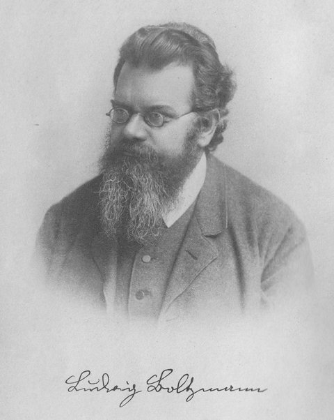
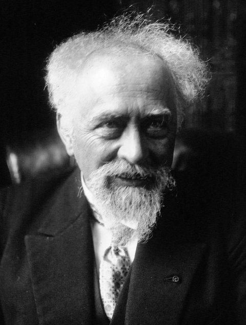
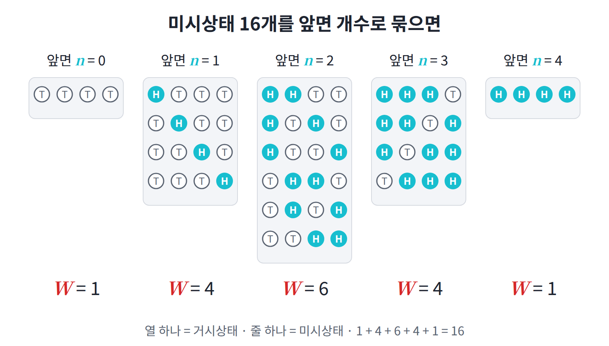
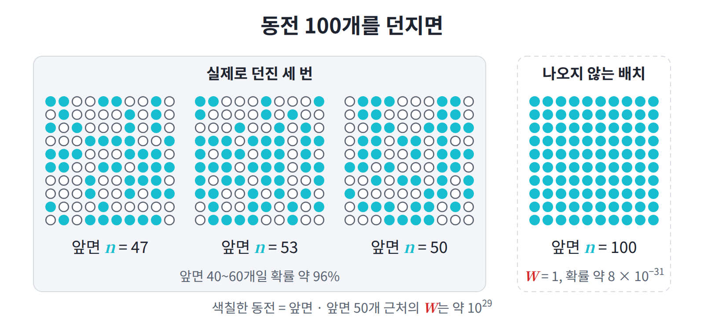
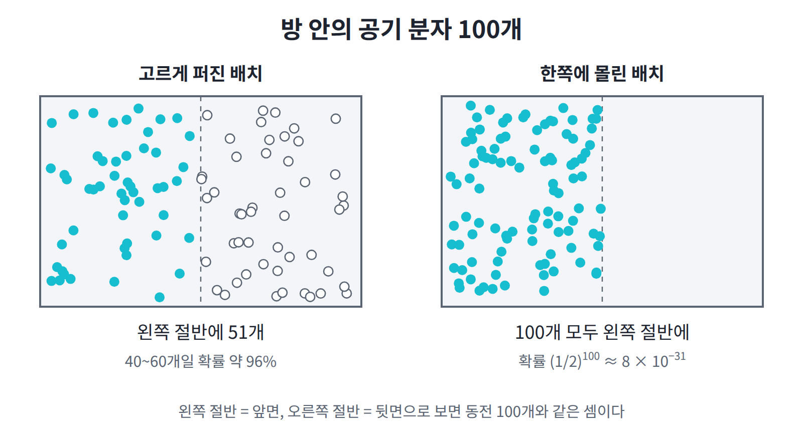
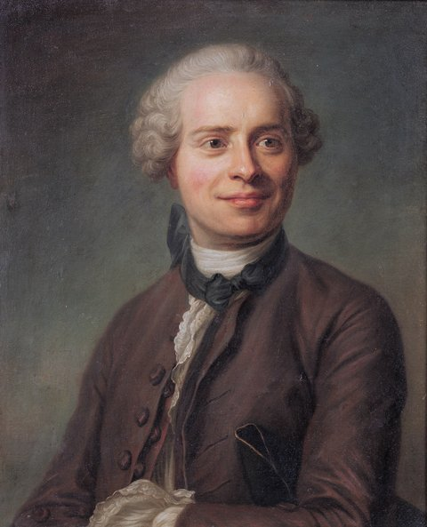

1장 — 미시상태와 거시상태
이 장의 물음
확산 모델은 3072차원의 순수 노이즈에서 이미지를 만들기 시작한다. 이 노이즈는 표준정규분포에서 뽑으므로 확률밀도가 가장 높은 곳은 원점인데, 실제로 뽑힌 노이즈의 크기(노름)를 재 보면 거의 언제나 약 55.4이고 원점 근처에는 하나도 오지 않는다. 가장 그럴듯한 점이 정작 샘플로는 나오지 않는 것이다. 온도나 압력처럼 우리가 재는 값도 사정이 비슷해서, 그 뒤에는 눈에 보이지 않는 수많은 입자의 배치가 있다. 그렇다면 하나하나를 볼 수 없는데도 무엇이 관찰될지 어떻게 말할 수 있을까?
이 장은 다음 물음에 차례로 답한다.
- 동전 몇 개를 던져 "앞면이 몇 개"라고만 말할 때, 그 말 뒤에는 서로 다른 결과가 몇 가지나 숨어 있을까?
- 동전 수를 크게 늘리면 왜 앞면 비율이 거의 절반으로만 나올까?
- 그런 결과의 수가 감당하기 어려울 만큼 커지면 어떻게 다룰까?
- 확률밀도가 가장 높은 곳과 샘플이 가장 많이 나오는 곳은 왜 다를까?
역사: 원자 논쟁과 볼츠만
1870년대에는 원자가 실제로 존재하는지가 논쟁거리였다. 온도나 압력 같은 성질은 실험으로 잘 측정되었지만, 그 밑에 무엇이 있는지는 아무도 볼 수 없었기 때문이다.

이런 상황에서 오스트리아의 물리학자 볼츠만은 "기체는 수많은 입자이고, 온도나 압력은 그 입자들의 평균적 성질"이라고 주장했다. 측정되는 값을 보이지 않는 입자들의 평균으로 설명하려 한 것이다. 그러나 마흐, 오스트발트 같은 당대의 영향력 있는 학자들은 "보이지 않는 원자를 전제하는 것은 과학이 아니다"라며 반대했다.
논쟁을 매듭지은 것은 브라운 운동이었다. 1905년 아인슈타인은 물에 뜬 꽃가루가 불규칙하게 움직이는 브라운 운동을 물 분자의 충돌로 설명하는 이론을 냈고, 1908년 페랭이 이를 실험으로 확인했다. 볼츠만은 그 사이인 1906년에 세상을 떠났으므로 이 확인을 보지 못했다. 그 뒤 원자의 존재는 받아들여졌고, 볼츠만의 방법은 통계역학의 기초가 되었다.

이 장은 그 방법의 가장 첫 단계, 곧 "경우의 수를 세는 것"을 다룬다. 입자 하나하나의 움직임은 볼 수 없어도, 입자들이 놓일 수 있는 배치가 몇 가지인지는 셀 수 있다.
정의: 미시상태와 거시상태
동전 4개를 던져서 "앞면이 2개 나왔다"고 말한다고 하자. 이 말에 들어맞는 결과는 몇 가지일까? 한 가지가 아니라는 것은 금방 알 수 있다. 첫째와 둘째가 앞면일 수도 있고, 첫째와 넷째가 앞면일 수도 있기 때문이다. 그러므로 "앞면 2개"라는 말과 "어느 동전이 앞면인가"라는 말은 서로 다른 수준의 기술이며, 둘을 구별해 부를 이름이 필요하다.
- 미시상태 (하나하나 다 적은 상태, microstate): 모든 입자 각각의 상태를 전부 지정한 것. 동전 4개라면 "첫째 앞, 둘째 뒤, 셋째 뒤, 넷째 앞"처럼 하나하나를 다 적은 것.
- 거시상태 (측정하는 요약값, macrostate): 우리가 실제로 측정하는 요약값. 동전 4개라면 “앞면이 모두 몇 개인가”.
두 이름은 한 쌍이어서, 하나의 거시상태 뒤에는 여러 미시상태가 있다. 그렇다면 한 거시상태 뒤에는 미시상태가 정확히 몇 개나 있을까?
정의: 경우의 수
실제로 세어 보자. 동전 4개에서 앞면이 2개인 거시상태에 속하는 미시상태는 HHTT, HTHT, HTTH, THHT, THTH, TTHH의 여섯 개다. 다시 말해 4개 가운데 앞면이 될 2개를 고르는 방법의 수이므로 C(4, 2) = 6이다. 이처럼 하나의 거시상태에 속한 미시상태의 개수를 경우의 수 W (거시상태에 속한 미시상태의 개수, multiplicity)라 하며, 물리 교재에서는 Ω로도 쓴다. 이 개수를 세는 것이 통계역학의 출발점이다. 다른 거시상태도 같은 방식으로 세면 다음 표를 얻는다.
| 앞면 개수 | 0 | 1 | 2 | 3 | 4 |
|---|---|---|---|---|---|
| W | 1 | 4 | 6 | 4 | 1 |

전체 미시상태는 2⁴ = 16개인데, 거시상태는 5개뿐이다. 그런데 표에서 보듯 각 거시상태에 속한 미시상태의 수는 서로 다르다. 그렇다면 이 차이는 어떤 결과를 낳을까? 그 답을 얻으려면 미시상태 하나하나가 얼마나 자주 일어나는지에 대한 가정이 먼저 필요하다.
정의: 등확률 가정
통계역학은 "다른 정보가 없으면 모든 미시상태는 같은 확률로 일어난다"는 가정에서 시작한다. 이것을 등확률 가정 (모든 미시상태를 똑같이 대하는 가정, equal a priori probability)이라 한다. 공정한 동전을 던지는 상황이 정확히 이 경우인데, 16가지 미시상태가 모두 같은 확률로 나오기 때문이다.
이 가정을 받아들이면 거시상태의 확률은 그 거시상태에 속한 미시상태의 수, 곧 경우의 수에 비례하게 된다. 그러므로 앞면 2개의 확률은 6/16이고, 앞면 4개의 확률은 1/16이다. 같은 동전을 던지는데도 앞면 2개가 앞면 4개보다 여섯 배 자주 나오는 것은, 그 거시상태에 속한 미시상태가 여섯 배 많기 때문이다.
정의: 축퇴도
경우의 수를 다루다 보면 모든 미시상태에 걸쳐 어떤 양을 더해야 할 때가 많다. 미시상태 i마다 어떤 값 Eᵢ(예: 앞면 개수, 에너지)가 있고 그 함수 f(Eᵢ)를 모두 더한다고 하자. 미시상태가 많을 때 이것을 하나하나 더하지 않고, 같은 값끼리 묶어서 더할 수는 없을까? 이 합을 계산하는 방식은 다음처럼 두 가지가 있다.
왼쪽은 미시상태 하나하나를 더한 것이고, 오른쪽은 같은 값을 갖는 미시상태끼리 묶어 더한 것이다. 묶어서 더할 때는 각 묶음에 미시상태가 몇 개 들어 있는지를 곱해 주어야 하는데, 그 개수가 g(E)다. 곧 g(E)는 값이 E인 미시상태의 개수이며, 물리에서는 축퇴도 (한 값에 묶인 미시상태의 수, degeneracy)라고 부른다. 묶어서 더할 때 이 g(E)를 빠뜨리는 것이 이 장에서 가장 흔한 실수다.
합과 함께 알아 둘 것이 기댓값 표기다. 확률 pᵢ로 가중한 평균, 즉 기댓값을 물리에서는 ⟨A⟩ = Σᵢ pᵢAᵢ로 쓰는데, 이는 ML의 𝔼[A]와 같은 것이다. 표기가 다른 이유는 단순하다. 물리 교재에서는 E를 이미 에너지에 쓰고 있기 때문에, 기댓값에는 괄호 표기를 쓴다.
동전 100개: 집중 현상
동전 4개에서는 가장 흔한 거시상태인 앞면 2개도 확률이 6/16에 그쳤다. 그런데 입자가 많아지면 사정이 크게 달라진다. 거의 모든 미시상태가 “가장 경우의 수가 많은 거시상태” 근처에 몰리는 것이다. 정말 그런지 동전 100개로 확인해 보자.

| 앞면 개수 | W | 확률 |
|---|---|---|
| 100 | 1 | 약 8 × 10⁻³¹ |
| 50 | C(100, 50) ≈ 1.0 × 10²⁹ | 약 0.08 |
| 전체 | 2¹⁰⁰ ≈ 1.3 × 10³⁰ | 1 |
앞면이 100개인 미시상태는 단 하나뿐이지만, 앞면이 50개인 미시상태는 약 10²⁹개나 된다. 그렇다고 앞면이 정확히 50개일 확률이 큰 것은 아니어서, 표에서 보듯 약 0.08에 불과하다. 확률이 몰리는 곳은 50 한 점이 아니라 50 근처 전체다. 실제로 앞면이 40~60개 사이일 확률은 약 96%이고, 앞면 개수의 표준편차는 5개, 곧 전체의 5%다.
흔들림은 1/√N으로 줄어든다
그렇다면 동전 수를 더 늘리면 이 몰림은 얼마나 심해질까? 동전 N개에서 앞면 개수의 표준편차는 √N / 2이다. 표준편차 자체는 N과 함께 커지지만, 이것을 N으로 나눈 상대적 흔들림은 1/(2√N)이므로 N이 커질수록 오히려 줄어든다.
| N | 상대적 흔들림 |
|---|---|
| 100 | 5% |
| 10,000 | 0.5% |
| 10²³ (기체 1몰 수준) | 약 10⁻¹² |
기체 1몰 정도가 되면 흔들림은 어떤 측정기로도 볼 수 없을 만큼 작아진다. 그래서 거시적으로는 경우의 수가 가장 많은 거시상태 하나만 관찰된다.
일상 사례: 방 안의 공기
같은 논리로 방 안의 공기를 생각해 보자. 방 안 공기가 저절로 한쪽 구석에 몰리지 않는 이유는 그것이 물리 법칙으로 금지되어서가 아니다. 공기 분자가 방 전체에 고르게 퍼진 배치의 수에 비해, 한쪽에 몰린 배치의 수가 상대적으로 무시할 만큼 적기 때문이다. 다시 말해 동전 100개를 던졌을 때 모두 앞면이 나오지 않는 것과 같은 이유다.

큰 수 다루기: 스털링 근사
동전 100개만 되어도 경우의 수가 10²⁹을 넘었다. 이처럼 경우의 수는 N에 대해 지수적으로 커지므로, 그대로 다루기보다는 로그를 취해야 계산할 수 있다. 그런데 이항계수에는 계승이 들어 있으니, 먼저 계승의 로그를 간단하게 쓸 방법이 필요하다. 여기에는 스털링 근사 (계승의 로그를 간단히 쓰는 근사, Stirling’s approximation)를 쓴다.
이것을 이항계수에 넣고 정리하면 다음을 얻는다. 유도는 대화 연습 문제 4에서 직접 해 보기로 하자.
다시 말해 W ≈ e^(N·h(p))이다. 여기서 h(p)는 p = 1/2에서 최대(ln 2 ≈ 0.693)이고 양 끝에서 0이 되는 함수다. 경우의 수가 N에 대해 지수적으로 커진다는 사실이 이 식에 그대로 드러나 있는 셈이다.
집중 현상이 이 식에서 나온다
이 식을 쓰면 동전 100개에서 본 집중 현상이 왜 일어나는지 설명할 수 있다. 앞면 비율이 p인 거시상태와 1/2인 거시상태의 경우의 수 비는 대략 다음과 같다.
이를테면 p = 0.6이면 h(0.5) − h(0.6) ≈ 0.020이다. 이 값을 넣고 N을 바꿔 가며 비를 구하면 다음과 같다.
| N | W(0.6) / W(0.5) |
|---|---|
| 100 | 근사 e^(−2.0) ≈ 0.13, 정확한 값 0.136 |
| 10²³ | e^(−2 × 10²¹) |
지수 안의 차이 0.020은 작지만, 거기에 N이 곱해져 있다는 점이 중요하다. 그러므로 N이 커지면 가장 큰 거시상태 외의 것은 급격히 무시할 만해진다. 앞 절에서 본 집중 현상의 이유가 바로 이것이다.
여기서 한 가지를 확인해 두자. 근사식이니 오차가 있을 텐데, 그 오차는 괜찮을까? 스털링 근사의 오차는 ln N 정도로만 자라고 주항은 N에 비례해 자라므로, 큰 N에서는 비율로 보면 오차가 사라진다. 다만 작은 N에서 이 근사를 확인하면 어긋나 보이는데, 이 점은 대화 연습 문제 4에서 다룬다.
패턴: 밀도와 확률의 차이
지금까지는 동전처럼 셀 수 있는 대상을 다루었다. 이번에는 연속적인 값을 갖는 분포에서 같은 생각이 어떻게 나타나는지 살펴보자. 연속 분포에는 확률밀도가 있는데, 밀도가 가장 높은 곳에 샘플도 가장 많이 모일까?
다트판
실력자가 정중앙을 노리고 던지면, 다트가 중앙 주변에 2차원 정규분포로 퍼진다고 하자. 표준편차는 σ = 3cm다. 그렇다면 다트는 어디에 가장 많이 꽂힐까?

밀도만 보면 정중앙이 답이다. 그러나 정중앙 한 점은 넓이가 0이므로, 정확히 거기에 꽂힐 확률은 0이다. 그러므로 점이 아니라 실제 크기가 있는 영역끼리 비교해야 한다. 불스아이와 그 바깥의 고리 하나를 실제 크기로 비교하면 다음과 같다.
| 영역 | 넓이 | 밀도 (중심 대비) | 꽂힐 확률 |
|---|---|---|---|
| 불스아이 (지름 1.27cm) | 1.27 cm² | 1 | 약 2% |
| 중심에서 2.5~3.5cm 고리 | 18.9 cm² | 약 0.6 | 약 20% |
고리는 중심에서 떨어져 있으므로 밀도가 중심보다 낮다. 밀도로는 중심이 약 1.6배 높지만, 넓이가 약 15배 차이 나기 때문에 확률은 오히려 고리가 약 9배 높다. 곧 확률밀도가 가장 높은 곳과 확률이 가장 많이 모인 곳은 다르다. 어떤 영역에 떨어질 확률은 "밀도 × 그 영역의 넓이(부피)"이므로, 밀도가 높아도 넓이가 작으면 확률은 작고, 밀도가 조금 낮아도 넓이가 크면 확률은 커질 수 있다. 이를 일반적으로 쓰면, 2차원에서 중심으로부터의 거리가 r일 확률은 r·e^(−r²/2σ²)에 비례하고, 이것은 r = σ에서 최대가 된다. 다시 말해 가장 흔한 거리는 0이 아니라 표준편차 근처다.
차원이 올라가면
2차원에서도 가장 흔한 거리가 0이 아니었는데, 차원이 올라가면 이 효과는 훨씬 강해진다. d차원 표준정규분포에서 반지름이 r에서 r + dr 사이일 확률은 다음과 같다.

두 인수는 서로 반대로 움직인다. 밀도는 원점에서 최대이고 r이 커질수록 줄어드는 반면, 껍질의 부피는 원점에서 0이고 고차원에서는 r이 커질수록 매우 빠르게 늘어난다. 그러므로 두 인수의 곱은 원점도 아니고 아주 먼 곳도 아닌 어딘가에서 최대가 된다. 그 위치를 찾으려면 로그를 취해 미분하면 되는데, (d − 1)/r − r = 0, 즉 r ≈ √d에서 최대다.
고차원에서 부피가 바깥쪽에 몰리는 정도는 극단적이다. 이를테면 1000차원 공에서는 바깥쪽 두께 1%의 껍질이 전체 부피의 1 − 0.99¹⁰⁰⁰ ≈ 99.996%를 차지한다. 공의 부피가 사실상 모두 겉껍질에 들어 있는 셈이다.

좌표로 보면 동전 문제와 같다
이 결과는 동전 문제와 같은 방식으로도 이해할 수 있다. ‖x‖² = x₁² + … + x_d²이고, 각 xᵢ²는 평균 1, 분산 2인 독립 변수다. 그러므로 ‖x‖²의 평균은 d, 표준편차는 √(2d)이고, 상대적 흔들림은 √(2/d)로 줄어든다. 동전 N개의 상대적 흔들림이 1/√N으로 줄어들었던 것과 같은 모양이다.
다시 말해 각 좌표가 동전 하나, ‖x‖²가 거시상태(앞면 개수)에 해당한다. 동전 100개가 50 근처에 몰리는 것과 같은 이유로 샘플이 반지름 √d 근처에 몰리는 것이다. 게다가 반지름 자체의 표준편차는 d와 무관하게 약 0.71이므로, d가 커질수록 껍질은 반지름에 비해 상대적으로 얇아진다.

ML에서 만나는 집중 현상
고차원 샘플이 "가장 확률이 높은 점"이 아니라 "경우의 수가 많은 얇은 영역"에 있다는 사실은 ML 실무 곳곳에 나타난다. 정보이론에서는 이 영역을 전형 집합 (샘플이 실제로 모이는 영역, typical set)이라 부른다. 네 가지 경우를 차례로 살펴보자.
가장 직접적인 예는 확산 모델의 노이즈다. 순수 노이즈 x ~ N(0, I)는 원점이 아니라 반지름 √d의 껍질 위에 있다. 이를테면 CIFAR 크기(d = 3072) 이미지라면 노이즈의 노름은 약 55.4다.
이 사실은 잠재공간 보간에서 곧바로 문제를 일으킨다. 두 가우시안 샘플을 직선으로 잇으면 중간점의 노름이 약 √(d/2)로 줄어들어서, d = 3072에서는 55.4가 39.2가 된다. 그 중간점은 학습 중 한 번도 본 적 없는 껍질 안쪽이므로 흐릿한 결과가 나온다. 그래서 GAN과 확산 모델에서는 반지름을 유지하는 구면 보간(slerp)을 쓴다.
LLM 디코딩에서도 같은 현상을 볼 수 있다. 가장 확률이 높은 문장을 고르는 방식(greedy, beam search)으로 얻은 문장은 반복적이고 부자연스럽다. 원점이 전형적인 샘플이 아닌 것과 같은 현상인데, nucleus sampling이 제안된 배경이 바로 이것이다 (Holtzman 외, “The Curious Case of Neural Text Degeneration”, 2019).
이상 탐지에서는 이 차이가 더 또렷하게 드러난다. 생성 모델이 학습 데이터에 없던 이미지에 오히려 더 높은 likelihood를 주는 현상이 보고되었다 (Nalisnick 외, “Do Deep Generative Models Know What They Don’t Know?”, 2019). 그래서 "밀도가 높다"와 "전형적이다"가 다르다는 점을 이용해, likelihood 대신 전형 집합 안에 있는지로 판정하는 방법이 제안되었다.
네 경우는 분야가 서로 다르지만 같은 교훈을 준다. "한 점의 밀도"와 "그런 점이 얼마나 많은가"를 혼동하면 틀린 판단을 하게 된다는 것이다.
대화 연습
선생님의 수업. 김민준(학부 3학년, ML 강의 몇 개 수강)과 이서연(수학과 3학년)이 문제를 풀고, 선생님이 틀린 곳을 짚는다.
문제 1. 경우의 수는 어느 거시상태의 것인가
동전 4개에서 "앞면이 2개"인 거시상태의 경우의 수 W를 구하고, 미시상태를 모두 나열하라.

김민준코드로 돌려 봤어요. itertools.product로 16개 만들고 앞면 2개인 걸 세니까 6개예요. HHTT, HTHT, HTTH, THHT, THTH, TTHH.

이서연민준아, 나는 W가 16이라고 생각했는데. 동전 4개로 나올 수 있는 경우 전부잖아.

선생님16은 전체 미시상태 수예요. W는 “어떤 거시상태에 속한” 미시상태의 수라서, 어느 거시상태를 말하는지 정해야 값이 나옵니다.

이서연그럼 거시상태마다 W가 다르겠네요. 앞면 0개면 1, 1개면 4…

선생님네. 1, 4, 6, 4, 1이고 합하면 16이에요. 휴대폰 잠금 비밀번호로 생각해 봐요. 0과 1로 된 4자리면 후보가 16개죠. 그런데 "1이 두 개 들어 있다"는 걸 알면?

김민준6개만 시도하면 되네요.
선생님그 힌트가 거시상태, 실제 비밀번호가 미시상태예요. W는 "힌트를 들은 뒤에도 남은 후보 수"입니다.

이서연공정한 동전이면 앞면이 2개 나올 확률은 6/16이고요.

선생님맞아요. 등확률 가정 아래에서 거시상태의 확률은 W에 비례합니다.
문제 2. 가중 평균과 분산
세 상태의 값이 Eᵢ = 0, 1, 2이고 확률이 pᵢ = 0.5, 0.3, 0.2일 때 ⟨E⟩, ⟨E²⟩, 분산 ⟨E²⟩ − ⟨E⟩²를 구하라.
김민준0, 1, 2니까 평균은 1이요. np.mean([0, 1, 2]).
선생님그건 세 상태의 확률이 같을 때만 맞아요. 여기선 확률이 다르죠. ⟨E⟩ = Σᵢ pᵢEᵢ예요.
김민준0×0.5 + 1×0.3 + 2×0.2 = 0.7이네요.

선생님학점 평균과 같아요. 3학점 A와 1학점 C를 평균할 때 과목 수가 아니라 학점 수로 가중하죠. pᵢ가 그 학점 역할이에요.

이서연⟨E²⟩는 ⟨E⟩²이니까 0.49, 분산은 0.49 − 0.49 = 0… 민준아, 이거 이상해. 분산이 0이면 값이 하나로 고정돼 있다는 거잖아.
선생님이상하다고 느낀 게 좋아요. ⟨E²⟩는 E²의 평균이지 평균의 제곱이 아니에요. 0×0.5 + 1×0.3 + 4×0.2 = 1.1이고, 분산은 1.1 − 0.49 = 0.61입니다.
두 반의 평균이 둘 다 70점이라고 해 봐요. 한 반은 전원 70점, 다른 반은 절반이 40점, 절반이 100점. 점수 제곱의 평균은 첫 반이 4900, 둘째 반이 (1600 + 10000)/2 = 5800이에요. 그 차이 900이 둘째 반의 분산이죠. ⟨E²⟩ = ⟨E⟩²가 되는 건 첫 반처럼 모두 같은 값일 때뿐입니다.

김민준ML 강의에서는 𝔼[E²]라고 썼던 것 같아요.
선생님같은 뜻이에요. 물리 책에서 괄호 ⟨ ⟩를 쓰는 건 E가 에너지 기호로 이미 쓰이기 때문입니다.
문제 3. 묶어서 셀 때 빠뜨리는 것
입자 3개가 각각 에너지 0 또는 ε를 가진다. (a) 가능한 총에너지 E와 각각의 g(E)를 구하라. (b) 각 미시상태에 가중치 x^(E/ε)를 줄 때 모든 미시상태의 가중치 합을 미시상태별 합(8항)과 에너지별 합(4항)으로 쓰고, (1 + x)³과 같은지 확인하라.

김민준에너지는 0, ε, 2ε, 3ε이니까 에너지별 합은 1 + x + x² + x³.
이서연나는 미시상태 8개를 다 썼는데 1 + 3x + 3x² + x³이 나와. 네 거랑 다른데?
선생님서연 학생이 맞아요. 민준 학생은 에너지별로 묶을 때 그 에너지에 속한 미시상태 수 g(E)를 빠뜨렸어요. E = ε인 미시상태는 (ε, 0, 0), (0, ε, 0), (0, 0, ε) 세 개죠. g = 1, 3, 3, 1이고, 올바른 식은 Σ_E g(E)·x^(E/ε)입니다.
이 실수는 역사가 깊어요. 1754년 달랑베르는 백과전서에 "동전을 두 번 던져 앞면이 한 번이라도 나올 확률은 2/3"이라고 썼습니다. 결과를 “첫 번째 앞면 / 뒷면 후 앞면 / 둘 다 뒷면” 세 가지로 나누고 똑같이 1/3씩 준 거예요.


김민준정답은 3/4죠. “첫 번째 앞면” 안에는 두 번째가 앞이든 뒤든 두 경우가 들어 있으니까요.
선생님네. 주사위 두 개의 합도 같아요. 합 7은 여섯 가지, 합 2는 한 가지뿐이라 2부터 12까지가 같은 확률이 아니죠.
이서연그런데 이게 왜 (1 + x)³으로 인수분해돼요?
선생님입자들이 상태를 서로 독립적으로 고르기 때문이에요. 세트 메뉴에서 버거 3종류, 음료 4종류를 독립적으로 고르면 조합이 3 × 4 = 12인 것과 같아요. 입자 하나의 합은 1 + x이고, 세 입자면 곱해져서 (1 + x)³. 전개하면 나오는 이항계수 1, 3, 3, 1이 바로 g(E)입니다.

김민준서연아, 이거 본문에서 가우시안 껍질 부피 빠뜨리면 안 된다던 거랑 같은 얘기다.

이서연응. 묶으면 항상 몇 개를 묶었는지 곱해야 돼.
문제 4. 스털링 근사 유도와 확인
ln N! ≈ N ln N − N을 써서 ln C(N, n) ≈ N·h(n/N)을 유도하라. h(p) = −p ln p − (1 − p) ln(1 − p).
김민준대입하고 정리하면 ln C ≈ −n ln n − (N − n) ln(N − n). 이게 N·h죠?
선생님n = 0을 넣어 볼까요. 앞면이 하나도 없는 경우는 W = 1이니까 ln W는 0이어야 하죠?

김민준−N ln N… 0이 아니네요.
선생님N ln N 항을 빠뜨렸어요. 전부 쓰면 N ln N − n ln n − (N − n) ln(N − n)이고, 스털링의 −N 항들은 −N + n + (N − n) = 0으로 정확히 상쇄됩니다. 이제 N ln N = n ln N + (N − n) ln N으로 나눠 붙이면 −n ln(n/N) − (N − n) ln((N − n)/N) = N·h(n/N)이 나와요. 식을 유도하면 이렇게 쉬운 경계값을 넣어 보는 습관을 들이세요.

이서연저는 유도는 했는데, 확인해 보니 안 맞았어요. N = 4, n = 2면 ln 6 = 1.79인데 4·h(0.5) = 4 ln 2 = 2.77이에요.
선생님식이 틀린 게 아니라 N = 4가 너무 작은 거예요. 스털링 근사는 N이 클 때 쓰는 근사입니다. 한 항 더 정확히 쓰면 ln C(N, N/2) ≈ N ln 2 − ½ ln(πN/2)예요.
| N | 정확한 값 | N ln 2 | 비율 |
|---|---|---|---|
| 4 | 1.79 | 2.77 | 0.65 |
| 100 | 66.78 | 69.31 | 0.96 |
| 10²³ | 약 6.9 × 10²² | 약 6.9 × 10²² | 1과 10⁻²¹ 수준 차이 |
오차는 ln N 정도로만 자라고 주항은 N에 비례해 자라니까, 비율은 1로 갑니다. 1조 원 예산에서 몇십 원 반올림을 신경 쓰지 않는 것과 같아요. 반대로 네 명에게 설문하고 "국민의 50%"라고 말하면 안 되듯이, 작은 N에서 근사식을 믿으면 안 됩니다.

이서연근사식은 작은 N 하나가 아니라 N을 키우면서 비율로 확인해야 하는군요.
문제 5. 다트는 어디에 가장 많이 꽂히나
정중앙을 노린 다트가 표준편차 3cm의 2차원 정규분포로 퍼진다. 불스아이(지름 1.27cm)와 중심에서 2.5~3.5cm 떨어진 고리 중 어디에 더 많이 꽂히는가?
김민준정중앙이 밀도가 제일 높으니까 불스아이죠.
선생님정중앙 한 점만 보면 밀도가 가장 높은 건 맞아요. 그런데 점은 넓이가 0이라 정확히 그 점에 꽂힐 확률은 0입니다. 밀도는 "넓이당 확률"이지 확률 자체가 아니에요. 어떤 영역의 확률은 밀도 × 넓이죠.
이서연그럼 넓이만 비교하면 돼요. 불스아이는 π × 0.635² ≈ 1.27cm², 고리는 π × (3.5² − 2.5²) ≈ 18.9cm². 고리가 15배 크니까 15배 많이 꽂혀요.
선생님넓이를 계산한 건 좋은데, 고리에서도 밀도가 중심과 같다고 두었어요. 3cm 떨어진 곳의 밀도는 e^(−3²/(2 × 3²)) = e^(−0.5) ≈ 0.61, 즉 중심의 약 60%예요. 실제 확률을 계산하면 불스아이가 약 2%, 고리가 약 20%입니다.
김민준밀도는 중심이 1.6배 높은데, 넓이가 15배라서 결국 고리가 9배쯤 많네요.
선생님네. 2차원에서도 가장 흔한 거리는 0이 아니라 표준편차 근처예요. 거리가 r일 확률이 r·e^(−r²/2σ²)에 비례하고, 이게 r = σ에서 최대가 되거든요.
이서연민준아, 다트판이 3072차원이면 r 대신 r³⁰⁷¹이 곱해지니까 전부 한참 바깥 고리에 꽂히겠다.
문제 6. 고차원 샘플의 노름
x ~ N(0, I)이고 d = 3072일 때, ‖x‖는 대략 얼마이고 샘플마다 얼마나 흔들리는가?
김민준평균이 0이니까 ‖x‖도 0 근처 아니에요?
선생님각 좌표 xᵢ의 평균은 0이지만, ‖x‖는 좌표를 제곱해서 더한 거라 음수가 될 수 없어요. 양수 3072개를 더한 게 0 근처일 수는 없죠. 평균이 0인 것과 크기가 0인 것은 다릅니다.
이서연각 xᵢ²의 평균이 1, 분산이 2니까 ‖x‖²의 평균은 3072, 표준편차는 √(2 × 3072) ≈ 78.4. 그러니까 ‖x‖ ≈ √3072 ± 78.4 = 55.4 ± 78.4요.

선생님그러면 ‖x‖가 음수가 되는 샘플도 흔하다는 뜻이 되는데요?

이서연아… 78.4는 ‖x‖²의 흔들림이지 ‖x‖의 흔들림이 아니네요.
선생님네. 제곱을 벗기면 흔들림도 바뀌어요. ‖x‖²이 Δ만큼 흔들리면 ‖x‖는 대략 Δ/(2‖x‖)만큼 흔들립니다. 78.4 / (2 × 55.4) ≈ 0.71이에요. 그러니까 ‖x‖ ≈ 55.4 ± 0.71. 3072차원 샘플은 거의 전부 반지름 55.4, 두께 1 남짓의 껍질 위에 있어요.

김민준동전 3072개 던지면 앞면이 거의 1536개 근처에 오는 거랑 같은 거네요.
문제 7. 두 샘플 사이를 직선으로 이으면
x, y가 d = 3072인 N(0, I)에서 독립적으로 뽑은 두 샘플일 때, 중간점 (x + y)/2의 노름은 대략 얼마인가? 이미지 생성 모델에서 두 노이즈 사이를 이렇게 보간하면 어떤 문제가 생기는가?
김민준둘 다 노름이 55.4니까 중간점도 55.4 아니야?
이서연아니야. ‖x + y‖² = ‖x‖² + ‖y‖² + 2x·y인데, 독립인 고차원 벡터는 거의 직교해서 x·y ≈ 0이야. 그러니까 ‖x + y‖² ≈ 2 × 3072이고, 2로 나누면 ‖(x + y)/2‖² ≈ 3072/2. 노름은 √1536 ≈ 39.2.
선생님서연 학생이 맞아요. 중간점은 반지름 55.4 껍질의 한참 안쪽, 39.2에 있어요. 문제 6에서 봤듯이 샘플은 55.4 ± 0.71에만 나오니까, 39.2는 모델이 학습 중에 한 번도 본 적 없는 영역입니다. 그래서 직선 보간한 중간 이미지가 흐리거나 색이 빠진 것처럼 나와요.

김민준그럼 어떻게 이어야 해요?
선생님서울에서 뉴욕까지 직선으로 가면 땅속을 뚫고 지나가죠. 비행기는 지구 표면을 따라 대권 항로로 갑니다. 보간도 반지름을 유지하면서 껍질 표면을 따라가야 해요. 이게 구면 보간(slerp)이고, 생성 모델에서 노이즈를 보간할 때 표준처럼 쓰입니다.

이서연결국 1장 내내 같은 얘기네. 가장 밀도 높은 곳이나 평균 위치가 아니라, 경우의 수가 많은 곳에 샘플이 있다는 거.
자주 하는 실수와 요약
자주 하는 실수
| 실수 | 나온 문제 | 바로잡는 법 |
|---|---|---|
| 전체 미시상태 수를 W로 착각 | 1 | W는 어느 거시상태의 것인지 먼저 정한다 |
| 확률이 다른데 단순 평균 | 2 | ⟨E⟩ = Σᵢ pᵢEᵢ, 학점 평균처럼 가중한다 |
| ⟨E²⟩ = ⟨E⟩²로 둠 | 2 | 모두 같은 값일 때만 성립한다. 분산이 0이 나오면 의심한다 |
| 묶어서 더할 때 g(E) 누락 | 3 | Σᵢ f(Eᵢ) = Σ_E g(E) f(E). 달랑베르의 2/3 |
| 유도 중 항 누락 | 4 | n = 0 같은 경계값을 넣어 확인한다 |
| 작은 N으로 근사식 검증 | 4 | N을 키우며 비율로 확인한다 |
| 밀도를 확률로 착각 | 5 | 확률 = 밀도 × 넓이(부피) |
| 넓이만 보고 밀도 변화 무시 | 5 | 두 요인을 모두 곱한다 |
| 평균 위치와 크기를 혼동 | 6 | 좌표 평균이 0이어도 노름은 √d |
| ‖x‖²의 흔들림을 ‖x‖의 흔들림으로 씀 | 6 | 제곱을 벗기면 흔들림도 Δ/(2‖x‖)로 바뀐다 |
| 고차원 직선 보간 | 7 | 중간점은 껍질 안쪽. 구면 보간을 쓴다 |
요약
이 장의 출발점은 거시적으로 관찰되는 값이 미시상태를 세는 데서 나온다는 것이었다. 입자가 N개면 경우의 수는 N에 대해 지수적으로 커지고, 그 결과 가장 경우의 수가 많은 거시상태 근처에 거의 모든 미시상태가 몰리며 흔들림은 1/√N으로 줄어든다. 또 어떤 영역의 확률은 밀도가 아니라 "밀도 × 그런 경우의 개수"로 정해진다. 그러므로 고차원 정규분포의 샘플은 밀도가 가장 높은 원점이 아니라 반지름 √d의 얇은 껍질에 있다.
막힌 곳
이제 우리는 경우의 수를 세고, 어떤 거시상태가 관찰될지 말할 수 있다. 그런데 W는 기체 1몰이면 10^(10²³) 같은 수라서, 로그를 씌워야 겨우 다룰 수 있었다. 그렇다면 그 로그값 자체는 무엇을 뜻할까? 이 질문에는 아직 답하지 못했다.
또 하나, 이 장의 동전은 모두 공정했다. 앞면이 90% 나오는 동전이라면 미시상태들의 확률이 같지 않으므로, 등확률 가정에 기대어 경우의 수만 세는 방법은 그대로 통하지 않는다. 그때는 무엇을 세야 하는가?